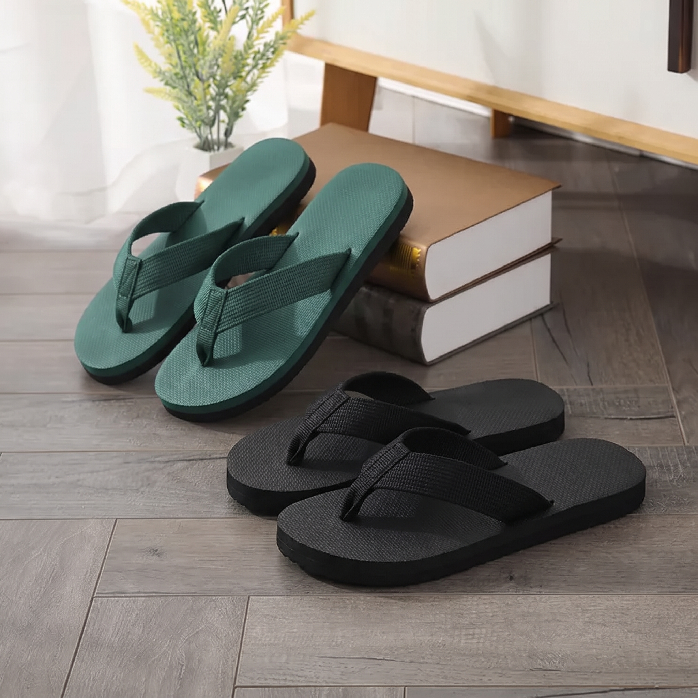
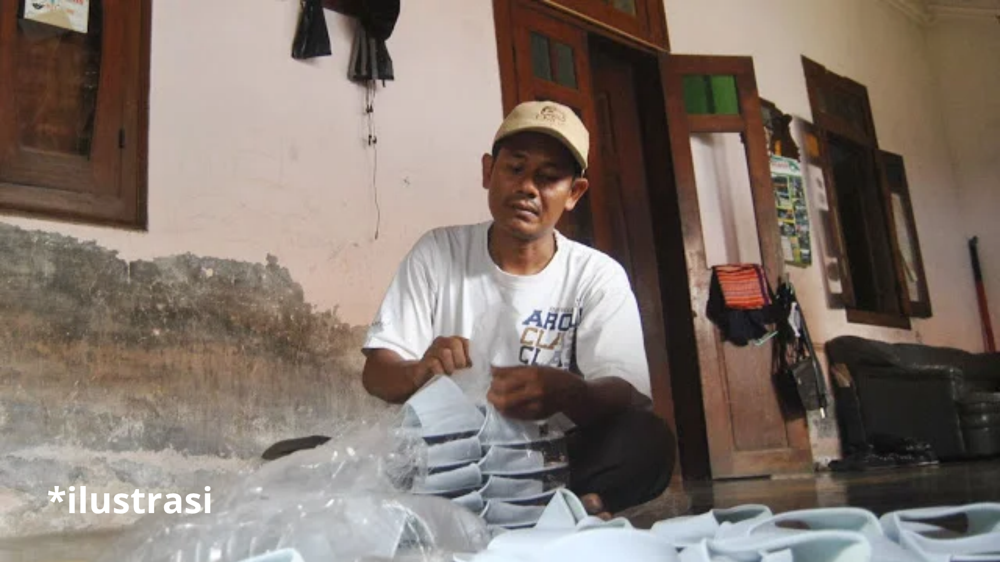
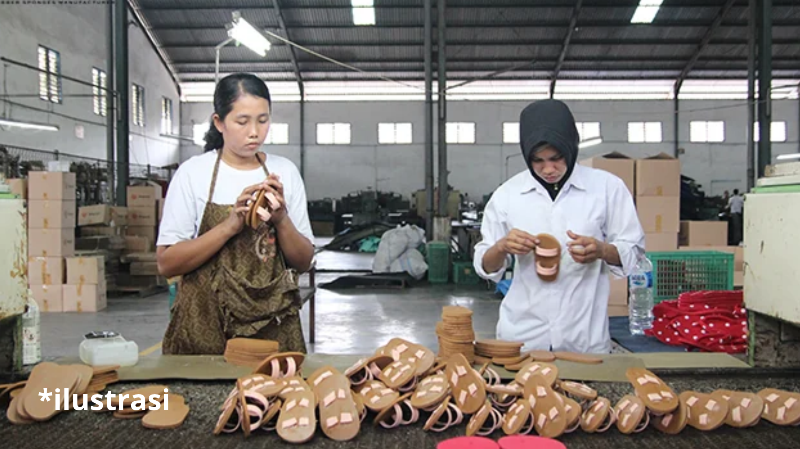
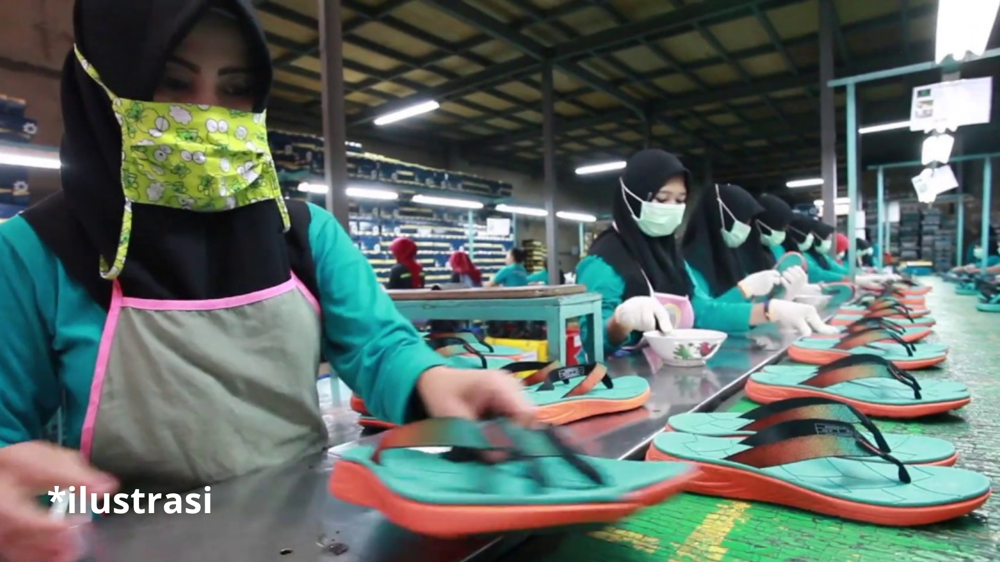
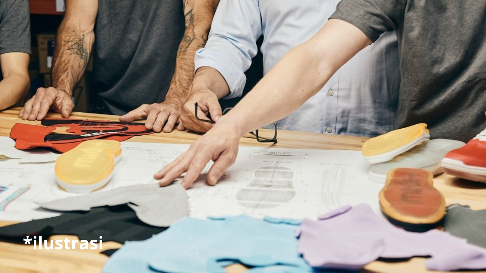
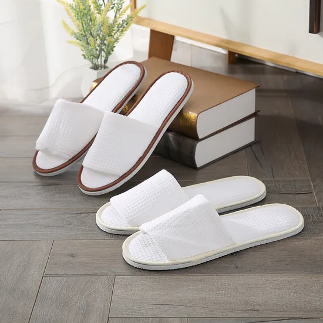
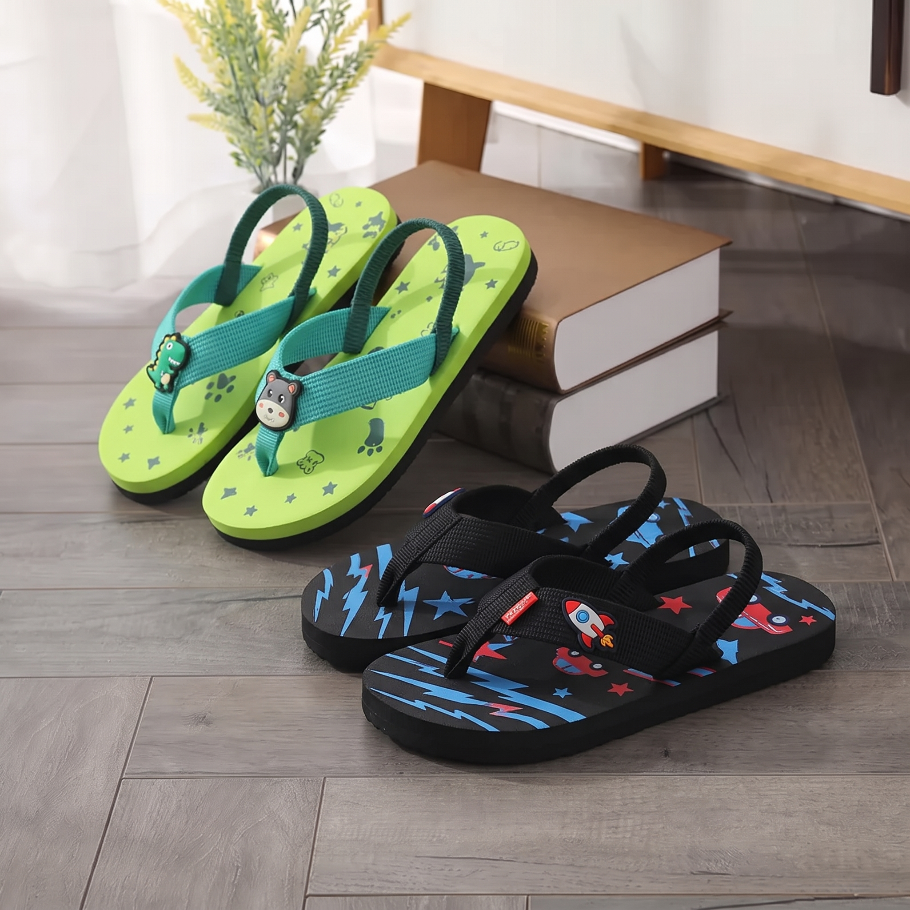
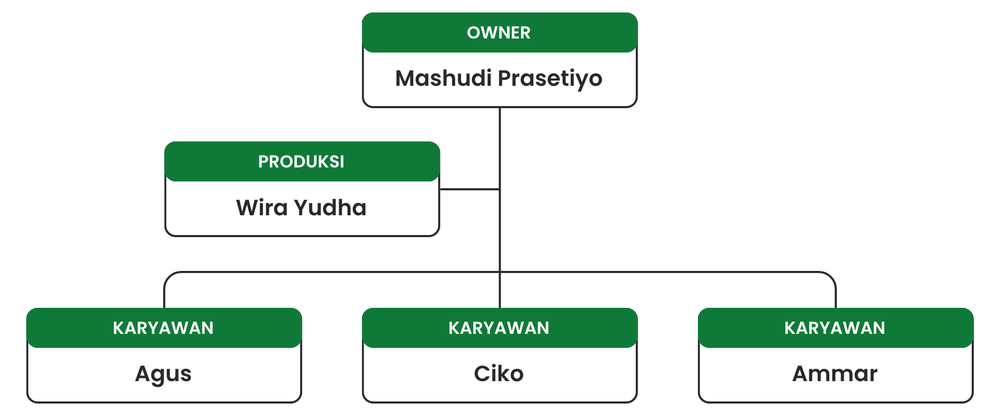
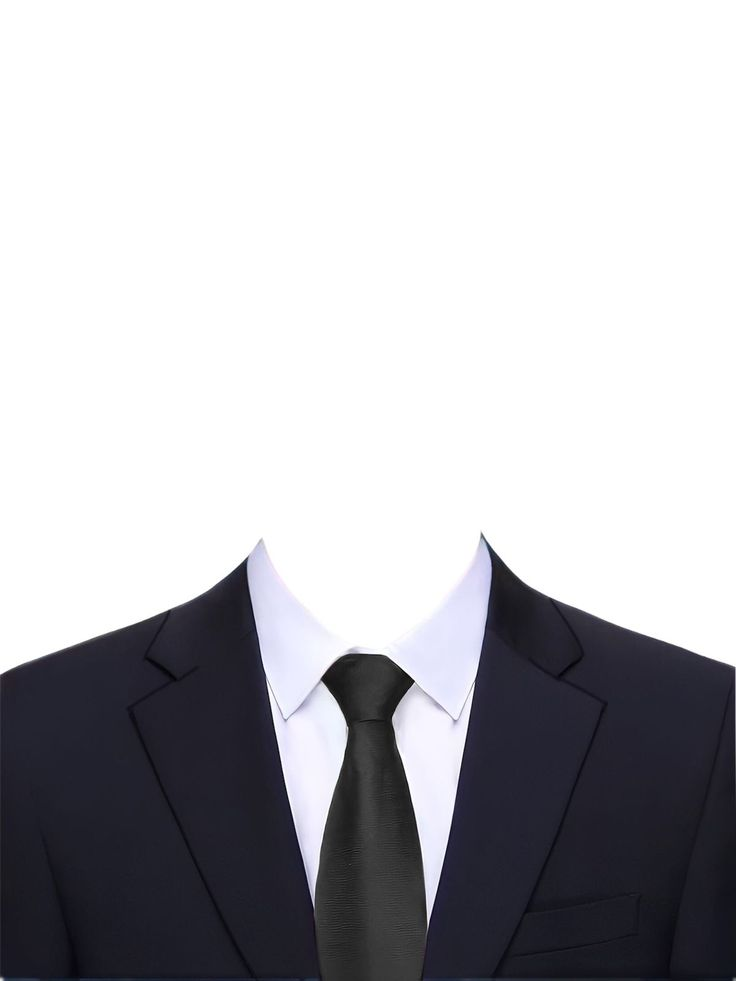

Dilahirkan dari ketekunan pengrajin di Dusun Karang Bangkal, UD. Hello Silvi mendedikasikan lebih dari 15 tahun keahlian memproduksi alas kaki sandal spon pilihan dengan kombinasi ketebalan material presisi, jahitan tali webbing kokoh, dan kenyamanan di setiap pijakan.

Berakar di Dusun Karang Bangkal RT.02 RW.04 Desa Karangrejo, Kecamatan Gempol, Kabupaten Pasuruan, UD. Hello Silvi mengawali perjalanannya pada tahun 2007 dengan tenaga kerja 2 hingga 3 pengrajin.

Merintis industri rumahan dari Dusun Karang Bangkal dengan 2 sampai 3 orang karyawan dan mulai memperkenalkan produk sandal spon ke pasar lokal.

Konsistensi mutu produk membuka kerja sama suplai pertama dengan mitra pemasok dan distributor dari Kota Malang untuk memperluas jangkauan pasar.

Permintaan pelanggan grosir yang meningkat tajam mendorong perekrutan tenaga kerja lokal tambahan guna memperbanyak kapasitas produksi sandal.

Diakui resmi sebagai UD. Hello Silvi dengan variasi model sandal yang beragam dan didukung letak strategis di perlintasan jalur utama Gempol untuk kelancaran suplai logistik bahan baku serta distribusi produk jadi.
“Menjadi salah satu produsen sandal spon dengan kualitas terbaik yang berdaya saing tinggi hingga skala nasional dan internasional.”
“Menghadirkan berbagai pilihan model, warna, dan dimensi alas kaki bermutu tinggi dengan harga terjangkau bagi seluruh lapisan masyarakat.”

Kombinasi klasik spon warna 10mm untuk bantalan atas empuk dan sol spon hitam 7mm berdensitas tinggi. Tali webbing teranyam 0.8m dengan label merk orisinal.
Dirancang untuk mobilitas pria harian. Warna netral hitam-abu dengan traksi sol berpola anti-licin dan ketahanan aus yang lebih tinggi.

Kombinasi warna ceria dengan sablon halus yang tidak mudah terkelupas. Sangat ringan dan lentur, menjaga kaki anak tetap nyaman bermain.
Kegiatan produksi di bengkel UD. Hello Silvi mengandalkan sinergi antara keterampilan tangan pengrajin berpengalaman dan peralatan cetak presisi. Setiap tahapan diawasi secara langsung oleh penanggung jawab produksi guna memastikan kualitas mutu sandal yang konsisten.
Sebagai unit usaha industri rumahan (home industry), UD. Hello Silvi mengoptimalkan tata ruang kerja yang terintegrasi antara area pemotongan bahan, meja penjahitan tali webbing, ruang perakitan pengeleman, dan gudang penyimpanan barang jadi.


Silakan masukkan rincian kebutuhan sandal spon untuk toko, reseller, atau pesanan khusus Anda.